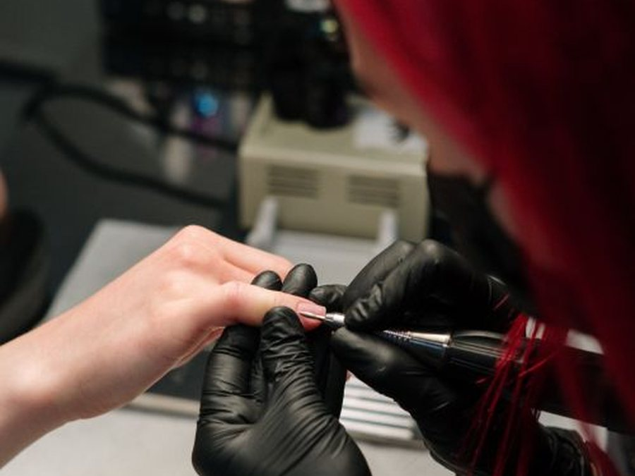
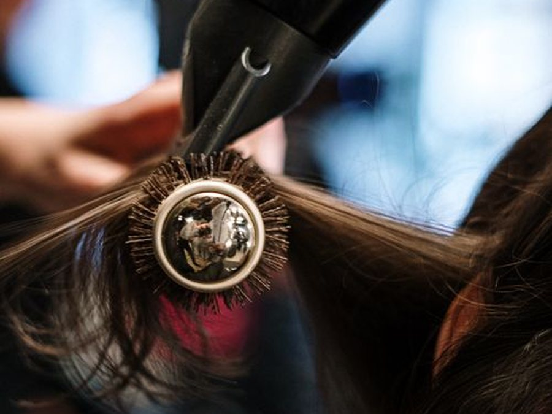
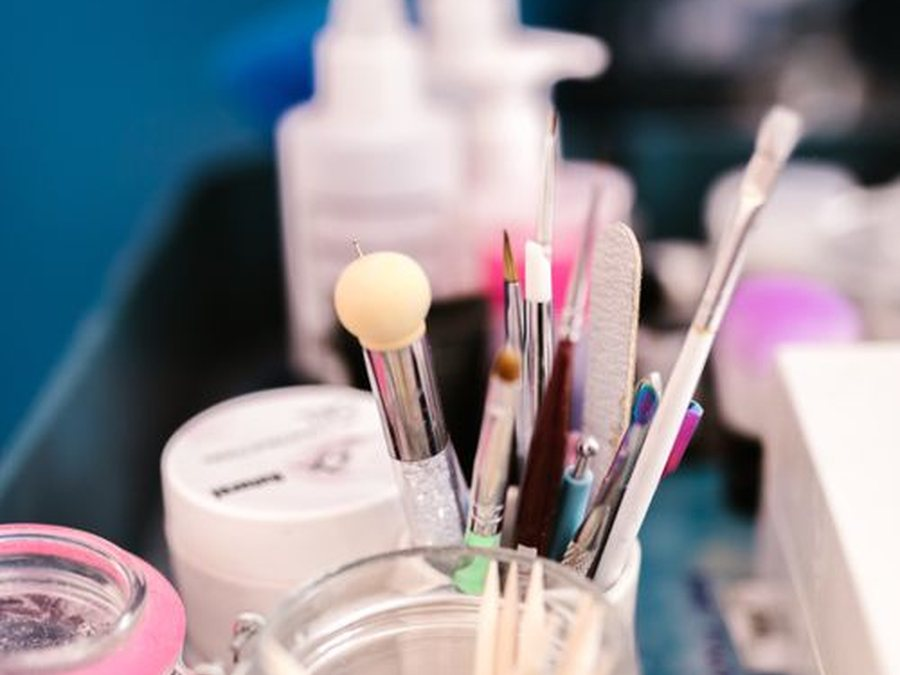
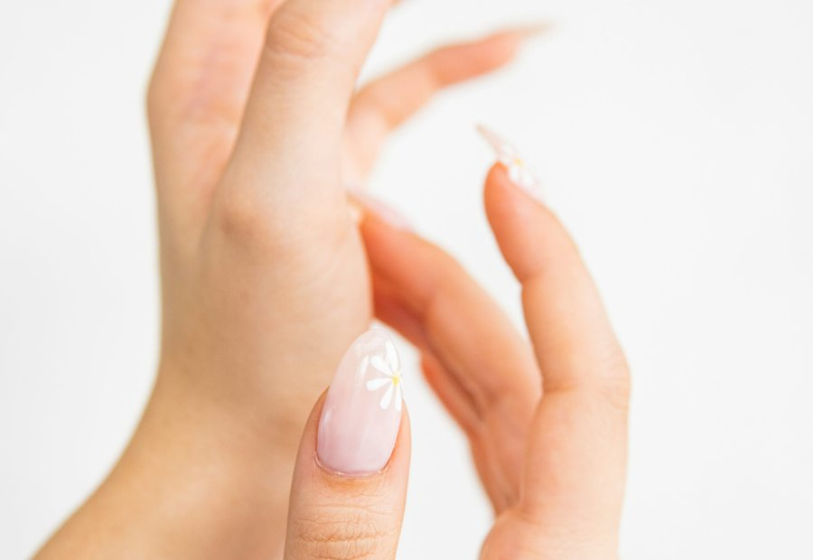

آموزش گامبهگام مانیکور روسی ایمن؛ شناخت سرسوهانها، دور موتور و زاویه دست
در این درس آموزشی، ترتیب دقیق استفاده از پوشر، سرسوهان شعلهای (اشکی)، نحوه تغییر جهت چرخش سوهان برقی و برش تمیز کوتیکول بدون ایجاد حساسیت را یاد میگیرید.
HANIS EDUCATIONAL ENCYCLOPEDIA
صفحه اختصاصی مقالات آموزشی گامبهگام آکادمی زیبایی هانیس؛ شامل ۱۵ درسنامه کاربردی به همراه تصاویر تخصصی در تمام لاینهای میکاپ، کاشت ناخن، رنگ و احیای مو، شینیون، فیشیال پوست، اکستنشن مژه و استانداردهای بهداشتی.


در این درس آموزشی، ترتیب دقیق استفاده از پوشر، سرسوهان شعلهای (اشکی)، نحوه تغییر جهت چرخش سوهان برقی و برش تمیز کوتیکول بدون ایجاد حساسیت را یاد میگیرید.

چرا یک مدل سایه یا خط چشم روی دو چهره نتیجه کاملاً متفاوتی دارد؟ در این مقاله آموزشی، نقشه صحیح فید سایه و زاویه خط چشم را برای هر فرم پلک بررسی میکنیم.

کلید رهایی از فرمولهای حفظی در رنگ مو، درک پیگمنت غالب در هر پایه دکلره و قانون رنگهای مکمل روبهرو در چرخه ایتن است که در این درس به زبان ساده تشریح شده است.

بیش از نیمی از زیبایی و استحکام یک شینیون اروپایی پیش از زدن اولین سنجاق و در مرحله زیرسازی حرارتی رقم میخورد. مراحل آمادهسازی انواع جنس مو را بخوانید.

یک جلسه فیشیال علمی چه تفاوتی با لایهبرداری خشن دارد؟ ترتیب استاندارد ۷ مرحله فیشیال کابینی و روش تشخیص پوست دهیدراته را در این مقاله آموزشی مرور کنید.

چرا افکت گربهای برای برخی چشمها باعث بیحال دیده شدن چهره میشود؟ نحوه نقطهگذاری روی پد زیر چشم و انتخاب بلندترین سایز مژه برای هر فرم چشم را یاد بگیرید.

راز اجرای لیفت ابروی نچرال و خوشفرم بدون سیخ شدن یا دفرمه شدن تارهای ابرو چیست؟ اصول شانهکشی زاویهدار و زمانبندی مواد را در این درس بخوانید.

کانتورینگ موفق یعنی ایجاد سایهروشن نامحسوس متناسب با فرم استخوانبندی هر فرد، نه کشیدن خطوط قهوهای یکسان روی تمام چهرهها! نقشه کانتور هر فرم صورت را ببینید.

آیا برای موی دکلرهشده و کشسان میتوان مستقیماً کراتین صافی انجام داد؟ روش علمی تست کشسانی مو و تفاوت عملکرد پروتئین، بوتاکس و کراتین را بیاموزید.

تفاوت محلول ضدعفونی سطحی با استریل کامل چیست و کدام ابزارها باید یکبارمصرف باشند؟ چکلیست کامل بهداشت حرفهای برای تمام لاینهای زیبایی.

ظرافت در خدمات ناخن بیش از هر چیز به آمادهسازی دقیق صدف طبیعی، ضخامت استاندارد مواد و انتخاب پالت رنگی هماهنگ با تناژ پوست دست وابسته است.

چگونه با شناخت نوع پوست، لایهگذاری حسابشده رطوبترسان و تکنیک صحیح فیکس، آرایشی شاداب، سبک و مقاوم در برابر نور و عکاسی اجرا کنیم؟

بررسی تفاوت تکنیکهای روشنسازی مو، اهمیت تست سلامت تار مو پیش از کار با مواد و راهکارهای حفظ نرمی و شفافیت رنگ در خانه.

مقایسه کاربردی سیستمهای استحکامسازی و افزایش قد ناخن از نظر انعطافپذیری، ظرافت ظاهری و اصول مراقبت روزمره جهت پیشگیری از لیفت.

معیارهای انتخاب لاین تخصصی بر اساس روحیه فردی، سرمایه شروع، اهمیت تمرین مستمر و شیوه ساخت پورتفولیوی استاندارد پس از دوره.
مقالهای مطابق با جستجوی شما یافت نشد. پیشنهاد میکنیم فیلترها را بازنشانی نمایید.
تبدیل دانش به مهارت عملی